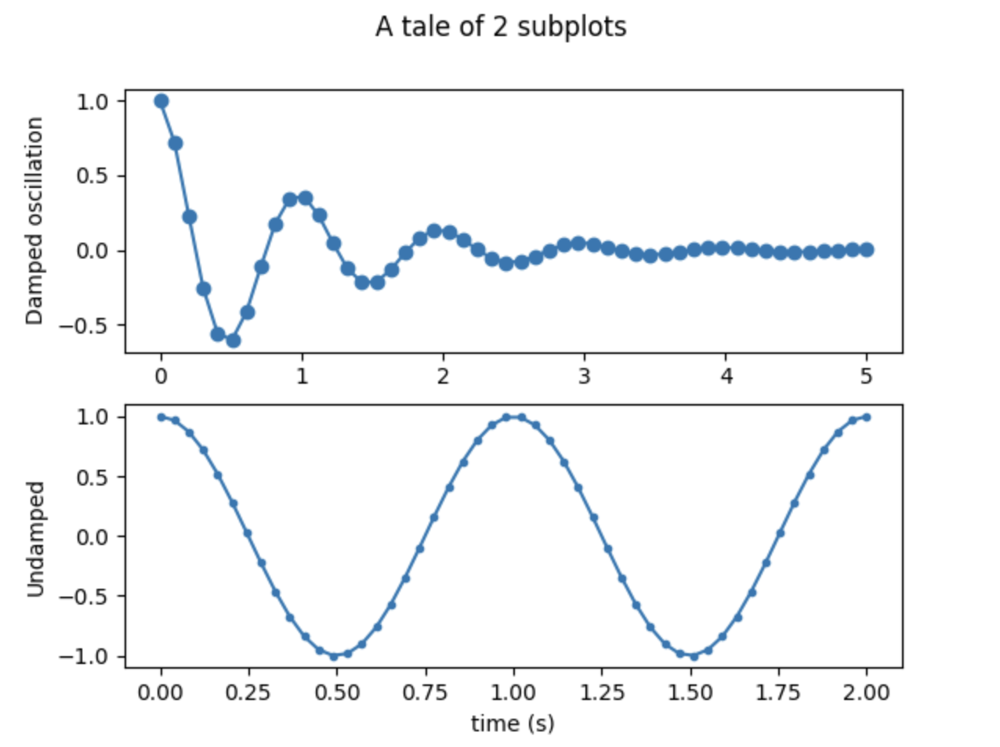
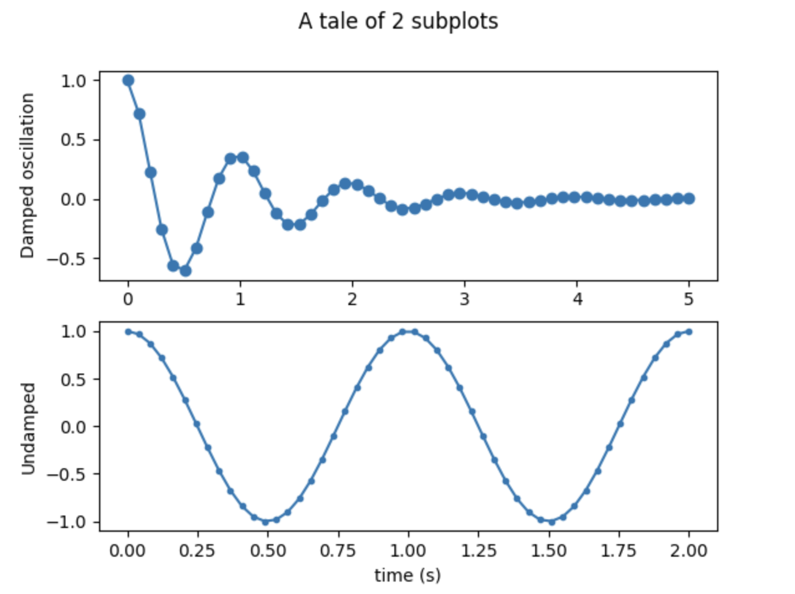

AI Agent Development Environments
I spent today exploring the various development environments for building AI agents, particularly within the Microsoft Azure ecosystem, where the choice of platform depends on the required balance between autonomy and ease of use. For business users or "citizen developers," Copilot Studio provides a low-code, visual interface for quickly deploying agents to common channels like Slack or Microsoft 365, while the Microsoft 365 Agents SDK offers professional developers the flexibility to build more complex, self-hosted solutions.
I also looked at the Foundry Agent Service, a managed Azure service that provides deeper model choices and enterprise-grade security for scalable agentic applications, as well as AutoGen, an open-source framework ideal for rapidly researching and experimenting with multi-agent coordination. Understanding these environments is essential because they provide the infrastructure needed for agents to perform knowledge integration, task automation, and autonomous decision-making securely within a business workflow.

 
